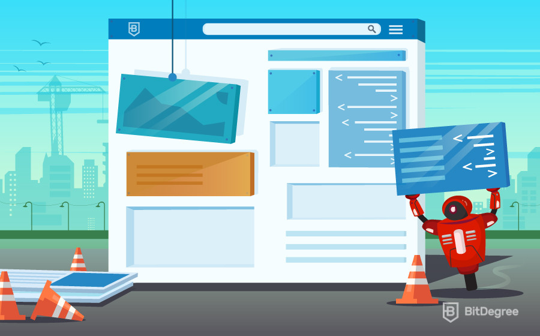

How to Become a Web Developer
Greetings, Tech Fanatics! Did you know there are more than 4 billion live websites on the internet today? Well, there are! And they all have to be designed, built and maintained. And yes, this work is done by web developers and if you want to become one, you came to the right place to learn how to become a web developer.Web development has become one of the fastest growing industries of all time and it won’t be slowing down any time soon. In this guide, I’m going to tell you everything you need to know about learning how to become a web developer.I’m going to show you the best ways to learn web development. More specifically I’ll be showing you how to be a web developer using online courses. So, if you want to become a self taught programmer, you’re on the right path and this is the guide for you.After I’ve covered the basics, I’ll help you choose a specialist area and show you the skills you’ll need to learn. I’ll also give you some tips on getting your first web development job!First, I want to answer a very common question – what does a web developer do?
The Role of a Web Developer
Web developers are responsible for everything you see and use on every website you visit. They also handle the way data is stored and develop security features to ensure user safety.There are three web developer types:
- 1. Front-end developers are sometimes called client-side developers and are responsible for creating the layout, features and appearance of a site or application. Anything that a user interacts with directly is built by front-end developers.
- 2. Back-end developers build the systems which allow the designs of front-end developers to operate. If this site was a car, front-end developers would design the seats, the steering wheel and the pedals. Back-end developers would build the engine.
- 3. Full-stack developers are able to do both. They are equally skilled as back and front-end developers. Full-stack developers are highly-respected (and highly paid!) members of the development community. Having skills in client-side design and back-end operations makes them very popular with employers, as you could probably guess!
Now that you know which types of web developers there are, you can also answer the question; “what does a web developer do?” for yourself. Next up, I’m going to teach you how to become a web developer. As you’re reading this guide on BitDegree, I’m going to assume that you’re interested in online learning. Am I right? Yes? Great! I’ll start there…
Learning Web Development Online
There is more than one way to learn how to become a web developer. Traditionally, web developers have degrees in computer science or software engineering. However, university isn’t for everyone…Recently, more and more newbie developers have been choosing to learn web development online. Personally, I think the best place to learn how to develop the web, is on the web! It makes sense, right?Online courses allow newbies to work at their own pace and have more control over what and how they learn. There are lots of well-respected online courses available to newbies who want to learn how to be a web developer. BitDegree actually offers a wide range of courses!BitDegree courses can teach you how to become a developer at a pace you decide. It offers interactive tutorials and gamified learning on a huge range of coding subjects. This style of learning will show you how to become a web developer and it’s ideal for beginners who want to record their progress as they train.Next, I’m going to give you a step-by-step guide to how to become a web developer online.For your first step, you need to make a difficult decision. Before you can learn how to be a web developer, you need to decide what kind of developer you want to be.To help you with your choice, I’d like to ask you a few simple questions…
Step 1: Find Your Passion, Choose Your Specialism
Grandma’s always telling me that once I find the right job, I’ll never work another day in my life. Web development is no different. When you choose the area that’s right for you, you won’t feel like you’re working at all! So, how do you decide? Answering these questions will help you make your decision;
- 1. What are you good at and what do you enjoy? Web development isn’t easy, so work out what you’re good at and use it. Once you know what you’re good at, ask yourself if you enjoy it. If the answer is yes, then that’s a great start! If you’re creative, then front-end development may be the specialism for you. If you’re a math nerd, perhaps working with back-end databases would be more suitable.
- 2. What’s your favourite website and why? Think about a site you love using. What do you love about it? The way it looks? Maybe you just love how it handles user traffic? The areas of web development that you admire and respect are the same areas you should consider working in.
- 3. What would you do differently? Think about the features of websites that really bug you! Do you hate YouTube pop-ups? Is the layout of Twitter too bland? Choosing the things that you’d most like to change about the sites and apps you use regularly is a great way to find a specialism.
- 4. What is the market missing? Every industry has areas that don’t have enough skilled staff. Find a gap in the market and fill it! Keep up to date with which skills the industry needs by checking out jobs listings on sites like Indeed or Monster. You can also talk directly with the development community on forums like Reddit and WebDeveloper.com.
When you’ve thought about these questions thoroughly, you’ll have a good idea about whether you want to be a front or back-end developer or even both! And remember this; when you’re learning how to become a web developer, use your strengths to follow your passion. Next, I want to look more closely at the skills you need to master when your learning how to be a web developer.
Step 2: Learn Must-Have Skills
Finding the right place to learn is just as important as knowing what skills you need. Let’s check the must-have skills you’ll need as you learn how to become a web developer and where you can learn them. We’ll check out what you need to know for front-end development first…
Front-End Development Skills
- 1. HTML and CSS: Hypertext Markup Language and Cascading Style Sheets are the most basic tools you’ll need to design a webpage. They are both markup languages which means they are sets of code that guide the way text is presented on a webpage. You can find the introductory HTML and CSS courses here.
- 2. JavaScript (JS):JavaScript is a programming language. It guides how a computer, site or app performs specific tasks. JavaScript is one of the most important skills you’ll need when learning how to become a web developer. If coding was a rock band, then JavaScript would be the electric guitar! There are tonnes of online JavaScript tutorials but, for you, I have two suggestions. First, you should check out BitDegree interactive introduction to JavaScript. Then move on to the 1-hour video tutorial.
- 3. Content Management: All sites have content. All content needs to be arranged and managed so it can be easily accessed by users. As a front-end developer, being able to use content management systems (CMS) is essential. Nearly two thirds of the Internet uses WordPress as its CMS (that includes BitDegree Tutorials!). So, if you only learn one CMS, learn WordPress. BitDegree has two free courses on WordPress, so you can start as soon as you’re ready!
- 4. Testing and Bug Removal: The real work starts when the coding ends! Front-end developers spend a lot of time testing code and searching for bugs. No one will care how beautiful your application is, if it doesn’t work properly!
Now, let’s check out what skills a top back-end developer needs and where you can learn them…
Back-End Development Skills
The back-end of a website is made up of an application, a server and a database. A back-end developer’s job is to get all three to communicate with each other as smoothly as possible. Here are a few of the main skills you’ll need to become a great back-end developer;
- 1. Python and Ruby: These are two of the most popular programming languages for building applications. Ruby is rated as 10th in the IEEE’s Top Ten languages list. Python is rated as number 1. A strong understanding of one, or both, of these languages is the first step towards a career in back-end development.
- 2. PHP and PHP Frameworks: PHP is another popular programming language and employers often look for developers with experience using it. PHP has lots of different frameworks which developers can use to make coding with PHP faster and simpler. Once you’ve mastered the basics of PHP, you can start using other frameworks like Zend, CakePHP and Laravel.
- 3. CVS The Concurrent Versions System (CVS) is a programme that allows back-end developers to work on different versions of the same code. It allows programmers to experiment with code – by themselves or as part of a larger team — until a final version is decided on.
Learning key skills is the most difficult stage in the training of any self-taught programmer. The basics like HTML and CSS may only take weeks to learn, but the more complex tools can take months to learn and years to master.As you learn how to become a web developer, you’ll need to put in as much time and effort as possible. You’ll only get out what you put in! Key skills are just the beginning. In the next step, I want to tell you about the additional skills you’ll need to reach the top of the industry…
Step 3: Develop Your Soft Skills
Training never ends when you’re learning how to become a web developer. You can learn development relatively quickly but coding isn’t the only thing you’ll need to know. The industry changes fast so one of the most important skills a programmer can have is flexibility. So, what does a web developer do when they’re not coding? Clients, especially smaller ones, are beginning to expect the web developers they hire to have a range of soft skills. Soft skills are non-technical skills that will help a web developer to understand the businesses and organisations they work for better. Soft skills include advertising, marketing, accounts and many more. The soft skills you’ll need to learn will depend largely on what kinds of client you work for. For example, if a developer takes a job at a company like Amazon, then soft skills in logistics and customer experience would be hugely desirable. There are many ways to learn soft skills. If you had a job before you decided to learn how to become a developer, then you probably already have some. If you’re just starting out, then don’t worry. A lot of companies offer on-the-job training in areas that are related to their business. The point I’m making here is that having soft skills can be just as important to a web developer as knowing JavaScript. They will help you solve the real-world problems that your clients face and will allow you to offer a unique specialist service. Now you know almost everything there is to know about how to become a web developer. You know what skills you need and where to get them. Next, I want to talk to you about getting your first job as a self-taught programmer.
Step 4: Get Your First Job
Web development is a tough business. It’s all about results, so get coding! As soon as you’ve learned the basics, start showing employers what you can do.Some of the developers you compete against in the market will have degrees in computer science or software engineering. You may even have these qualifications yourself. However, a portfolio of well-designed apps and web pages is far more important than any degree or certificate so it’s important to start building your profile as a developer. Most people know who Mark Zuckerberg is because he created Facebook, not because he went to Harvard! Start by designing sites for your friends and family. Then set up social media accounts to promote your work. Don’t be afraid to approach established developers for tips and advice. They might even offer you a job! As a self-taught programmer, you need to have confidence in the skills you’ve learned. Don’t let the fear of failure stop you from achieving your goals. You’ve put in the time and effort, now you can start enjoying yourself! Be prepared to become a superstar of self-promotion. You’ve got skills, right? So, let the world see them! There’s one more step you need to consider as you learn how to become a web developer. Your training doesn’t end when you get your first job and neither does this guide!
Step 5: Training, Practice and More Training!
There are few professions in the world which change as fast as web development. If you ever stop learning skills and practicing old ones, you’ll get left behind. So, celebrate the completion of each step and then start the next one! If you’re just starting to learn how to become a web developer, then this step might not be for you just yet. However, keep reading because it won’t be long until you get here. If you’ve been training for a while and you think you’ve mastered the basics then listen carefully because I’m talking to you! You can never really learn web development, you can only ever be learning web development. It’s a process that never ends! A lot of programmers thought they’d learned JavaScript and then You Don’t Know JS was published. You Don’t Know JS is a series of online-books that’s free to download and it will teach you everything you thought you knew about JS but didn’t really!
How to Become a Web Developer: Final Thoughts
It takes a lot of time and effort to learn how to be a web developer. There’s no easy way to do it. Feel free to forget everything you’ve read today but remember these three words;Write them down in big black letters and pin them to your wall! Learning web development is a huge task but if you remember these simple words, you’ll be fine. And there’s never been a better time to learn how to become a developer. Every business, government and charity in the world uses some form of web platform. Finding people with the skills required to build and maintain those platforms is still quite difficult. You only need to look at the salaries earned by web developers to realise how high the demand for their services is.You now know how to become a developer. The rest is your decision. If you want to learn web development, then the only person stopping you… is you! Are you ready to take the next step? Yes? Then check out some of the awesome courses we have right here at BitDegree and let me know what you think!